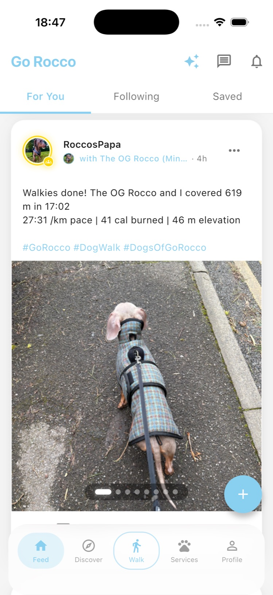
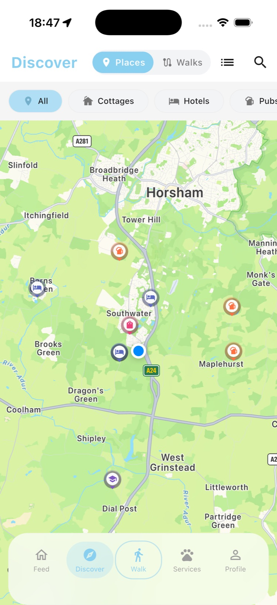
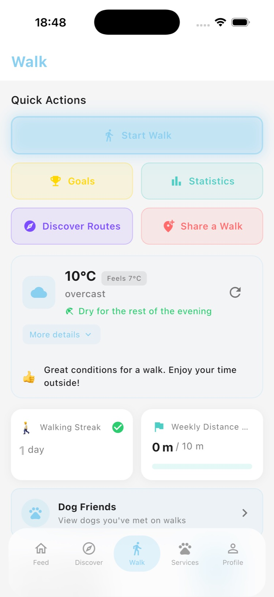

Go Rocco Is Live on the App Store!

It's official. After months of development, testing, iterating, and more than a few late nights fuelled by dog walks and strong coffee, Go Rocco is live on the iOS App Store. You can download it right now, completely free.
This is a moment we've been working towards for a long time, and we're genuinely thrilled to share it with you. Go Rocco started as an idea between two dog owners who were tired of stressful encounters on walks. Today, it's a real app in your pocket, ready to make every walk safer and more enjoyable.
We want to say a heartfelt thank you to everyone who has supported us along the way - our early testers, our community, and every dog owner who told us "yes, we need this." This launch is for you.
What is Go Rocco?
For those just joining us, Go Rocco is the all-in-one dog walking, safety, and community app built for UK dog owners. With The Kennel Club estimating there are over 12 million pet dogs in the UK, we set out to solve a simple problem: dog walks should be enjoyable, not stressful. Whether you have a sociable Labrador who wants to greet the world or a reactive rescue who needs a bit more space, Go Rocco helps you walk with confidence.
At its core, the app combines GPS walk tracking with a live temperament map - what we call the 50-metre rule. Before you even reach another dog, you can see whether they're friendly, selective, or reactive. It gives owners a voice and gives every dog the respect they deserve. No more surprise encounters. No more shouting "he's not friendly!" across a field.
Beyond the map, Go Rocco is a place to discover dog-friendly venues, keep your pet's health records in one place, and connect with a community of dog owners who genuinely care about doing walks better.
What you can do right now
Here's what's waiting for you when you download Go Rocco today:
- GPS walk tracking: Record every walk with detailed route maps, distance, duration, and pace. Build a complete walking history for you and your dog
- Live temperament map: Set your dog's temperament (friendly, selective, or reactive) and see other dogs nearby before you cross paths. Plan your route based on real-time awareness
- Dog-friendly places: Discover pubs, cafes, parks, and beaches that welcome dogs. No more guessing at the door
- Pet passport: Keep vaccination records, vet details, microchip numbers, and health notes all in one secure place
- Community: Connect with other dog owners in your area. Share tips, favourite walks, and local knowledge



All of this is free. No trial period, no paywall for the basics. We believe every dog owner deserves access to safer walks, regardless of budget.
Why we built this
Go Rocco wasn't born in a boardroom. It was born on muddy footpaths and in crowded parks, out of real frustration and real experiences. Too many near-misses with off-lead dogs. Too many times not knowing whether the dog coming round the corner needed space. Too many pubs turned away at the door because "sorry, no dogs."
We're dog people, building for dog people. Every feature in Go Rocco exists because we've personally wished it existed. The temperament map came from walking a reactive dog and wishing other owners could know before they approached. The GPS tracking came from wanting to remember brilliant walks and share routes with friends. The dog-friendly places came from one too many disappointing Sunday lunches.
If you want the full story of how Go Rocco came to be, head over to Our Story. It involves two frustrated dog owners, a lot of Post-it notes, and an unwavering belief that technology should make the real world better - not just the digital one.
"We built Go Rocco because we needed it. Every feature started as something we wished existed on our own walks."
What's coming next
Today's launch is just the beginning. We have a packed roadmap and we're moving fast.
Update: Android is live! Go Rocco is now available on Google Play with full feature parity. Read the full announcement in our Android launch post.
We're also working on Alpha Pack, our premium tier, which will unlock advanced features like extended walk analytics, priority access to new features, and enhanced community tools. The core app will always remain free - Alpha Pack is for those who want to take things further.
Community features are expanding too. We're building out group walks, local leaderboards, and ways for dog owners to share knowledge about their areas. Go Rocco isn't just an app; it's a community, and we want it to feel like one.
You can see everything we're working on over at the roadmap. We update it regularly and we genuinely listen to feedback - if there's something you want to see, tell us.
Join the pack
If you've ever wished for a heads-up about a dog ahead on the path, if you've ever wondered whether that cafe on the corner lets dogs in, if you've ever wanted to track your walks and remember the good ones - Go Rocco is for you. Organisations like the RSPCA champion responsible dog ownership, and that's exactly the culture we're building.
Download it today. Set up your dog's profile. Take it on your next walk. And let us know what you think - we're building this together, and your feedback shapes what comes next.
Every dog deserves a safe walk. Let's make it happen.
Download Go Rocco today
Go Rocco is free on the App Store and Google Play. Set up your dog's profile, explore the live map, and make every walk safer.